Modern Forehand Grip Variations Part 1¶
Modern Forehand Grip Variations: Part 1¶
John Yandell¶
We need a simpler and more accurate way to describe the forehand grips in the modern game. It's commonly believed that most pro players use a "semi-western" grip. But that term has become almost meaningless. In the old days the terms "eastern," "semi-western," and "western" were considered sufficient. But if we really look at what is going on in the modern game, it's more complex than that. The range of grips is much wider than is normally recognized. The differences in the actual grip structures can be hard to see, but these differences have a fundamental influence over the capabilities and style of the top players. Because of this, grips dictate much of what his happening.
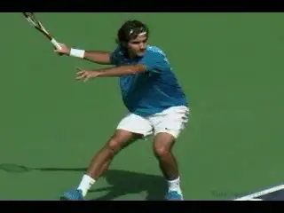
The forehand grips of the two top players--opposite ends of the spectrum.
As we'll see in these two articles, there are at least 6 distinct forehand grips that are used at the highest levels of the pro game. At least 3 of these could be considered some version of "semi-western." But there are a significant number of top pro players who play with less extreme eastern grips, including Roger Federer. And there are also pro players who play with more extreme grips that should be considered some version of "western," including Rafael Nadal.
When we look the top two players in the game--Federer and Nadal--they are at the opposite ends of the grips spectrum, with the rest of the players somewhere in between. That fact alone shows how complex and diverse the modern game really is. Correct me if I'm wrong but it would be crazy to suggest that there were 6 different grips in golf or in baseball.
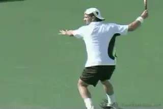
There are at least 3 distinct "semi-western" grips.
So how can we identify the differences in the grips of the various top players? Is it possible to develop a clear terminology that let's us see where certain players fit on the scale from conservative to extreme?
In this series of articles on the modern forehand, we've looked closely at the grips of several top players, and talked about the positioning of their hands on the racket. (link.) We've also looked at the differences in the swings associated with the differences in the grips. But some of the most frequent questions I get from subscribers are still about the forehand grip. What grip does a certain pro player hold? What grip should I use? Or, if I use a certain grip, how do I make this or that happen?
So let's look more systematically at the whole issue of grips. Let's see how they affect the range of options on the forehand swings in pro tennis. Then let's see what that shows us about which grip may or may not be right for you.
In the first article we'll start by outlining a more sophisticated and precise method for describing how the hand connects to the tennis racket. Then we'll look at the first 3 grip variations in the modern game, the more conservative grip structures used by players including Pete Sampras, Roger Federer and Andre Agassi.
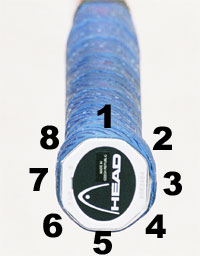
The shape of the racket handle is an octagon with 8 bevels.In the second article next month, we'll go into detail about the three more extreme grip varations, used by players ranging from David Nalbandian to Andy Roddick to Rafael Nadal.
Bevels and Key Points
To really understand the subtlety and the complexity of the forehand grips, we need to look at the racket handle and the racket hand in a different way. This is by looking first, at the bevels on the frame, and, second, by looking at two key reference points on the hand. These are the index knuckle and the lower heel pad. We've done this with some specific players in previous articles, but now let's try to create a more general framework and terminology that covers the entire range.
If we look at the racket handle we can see that it is actually in the shape of an octagon with 8 sides or bevels. We can number these starting from the top bevel moving clockwise, so that we get Bevel 1 through Bevel 8.
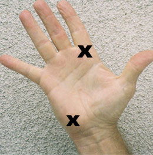
The index knuckle and the center of the heel pad. Their positions on the bevels determine grip.If we look at the palm of the hand we can also identify two key points in how the hand connects with the racket. The first is the base knuckle of the index finger. The second is the center of the lower heel pad. Open your hand. Now draw an imaginary line from the bottom or base knuckle of the index finger down across the center of your palm, and through the center of the heel pad at the bottom left. This diagonal connects the two widest points on the palm of your hand and indicates how and where most of your hand will connect with the racket handle.
To determine the grip, we need to see where those 2 key points touch which bevels. Then we can assign a bevel number to the index knuckle, and a second bevel number to the heel pad. So every grip variation will have two numbers. This numerical terminology will allow us to accurately describe the differences in the grips between the players. For example a "3 / 3" forehand grip means that the index knuckle and the heel pad are both aligned with the third bevel. Once we understand the relationship between the hand and the bevels, we can also give the grip a name that reflects this, although this terminology is less important than the actual position of the hand on the racket.
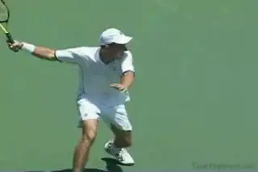
We can't necessarily infer grip structure from the swing.
It sounds like a great plan, and it is. But when we look at images of the top players, the exact position of the key points on the bevels isn't always easy to see. Because of the synthesis of conservative and extreme elements in the swings, we can't infer the grip structure simply by looking at the swing patterns themselves. Plus the swings happen very fast, and even filming from quite close to the court, it's tough to get a clear look at the hand.
There are other challenges. First, players often position the knuckle and/or the heel pad on the edges between the bevels. Second, some players spread their fingers out while others keep them bunched together. Third, some players shift their hands upwards or downwards on the handle. Federer for example, players with part of his hand off the handle. Also, players play with different size grip handles. Federer, I've been told, actually plays with a 4 and 3/8" handle.
All these factors affect what the hand looks like on the handle and make the process more difficult. Still, if we look closely I think we can make reasonably good judgments, and we can create an overall framework that brings a lot of clarity to a critical issue than is generally over simplified and misunderstood. We can always modify the exact designations for a given player if we get better images later. Maybe one day Roger will let me walk on the court after he hits a forehand and take pictures from every angle I want. You never know, it could happen.
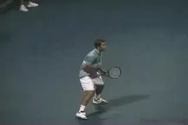
A classic forehand with a classic grip.
3 / 3 Grip: Modern Eastern
So we said there are probably at least 6 distinct combinations that are used in the pro game. Let's start with the most conservative grip, or the most "eastern." Then we can work our way underneath the handle toward the "west."
In one of our previous articles we identified Pete Sampras's grip as a "3 / 3." We called this a modern eastern. This is the most conservative grip that we see in pro tennis. What that means is that his index knuckle is in the center of the third bevel down. The same is true for his heel pad.
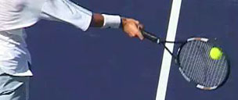
Tim Henman's 3 / 3 Eastern grip--index knuckle and heel pad behind Bevel 3.
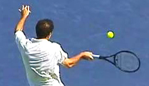
Dominic Hrbaty's eastern 3 / 3, appears virtually identical to Pete's.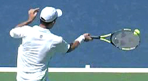
This grip structure aligns the palm of the hand with the face of the racket as directly as possible. You can see this if you place the palm of your hand on the strings and then slide it down along the handle all the way down the handle and grip the racket. Now open your palm and you can see that the third bevel is lying across your palm on the diagonal between the center of the two key points of the hand, the index knuckle and the heel pad.
Besides Sampras, two other top players who use this grip are Tim Henman and Dominik Hrbaty. In general these players tend to spread their fingers out somewhat up the handle. Hrbaty's index finger is probably gapped a little more than Pete or Tim.
Pete and Tim also play with a little bit of the hand off the end of the grip at the bottom of the racket, while Hrbaty's heel pad is fully on the handle. The 3 / 3 alignment though appears to be virtually the same for all three. This grip is usually associated with an attacking style of play, since Pete and Tim both play serve and volley as much as possible, especially on grass. But it can be effective in the back court as well. In Hrbaty's case it is associated with standing quite far back, retrieving, and hitting a large number of balls with a netural stance. Sampras and Henman tend to play up closer to the baseline when they stay back, and hit more or even most of their forehands from open stance.
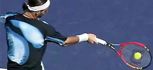
2 views of Federer's 3 1/2 / 3 or modified eastern grip.
3 1/2 / 3 Grip: Modified Eastern
I noted at the start that one of the complexities in describing the grips is that the players can have the index knuckle and/or the heel pad on the edges between the bevels, half way between one and another.
This definitely applies to Roger Federer. He the obvious, most outstanding example of the second grip, what we call a "3 1/2 / 3." What this means is that the index knuckle isn't directly behind the handle but shifts a quarter of an inch or so downward, so that it is on the edge between Bevel 3 and Bevel 4. His heel pad is the same as Pete or Tim, aligned directly with Bevel 3. We've already looked at this in detail in the Federer forehand articles. (link.)
Like Pete or Henman, Roger also plays with part of his hand slightly off the handle. His index finger is gapped only slightly at most, another difference with the 3 / 3 players described above. Two other players who seem to have nearly identical 3 1/2 / 3 grip structures are Mario Ancic and Paradorn Scrichaphan.
I call this a modified eastern grip, because I think it's closer to the grip of Pete or Henman, than to that of a mild semi-western player like Agassi. (See more on this below.) But the terminology is less important than the alignment between the bevels and the key points on the hand. Brett Hobden for example calls Federer's grip a "hybrid grip." Other knowledgeable coaches prefer to think of it as a version of the semi-western. Terminology in tennis can be confusing and problematic, and this is nowhere more true than with the grips. What is more important is where the hand actually sits on the handle.
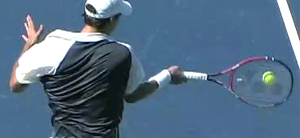
See the slight downward shift of the index knuckle for Paradorn and Mario Ancic.
I like the eastern terminology, because in general this grip is associated with a very versatile all court style. Federer and Ancic are two of the few players in the modern game who seem eager to get to the net when possible. This grip allows them to take the ball early, and it is also a smaller change to the continental volley grip. In general, it seems that players with more extreme grips are just less comfortable with this change. (Taylor Dent is an exception.) For this reason it is generally a great forehand grip for developing a balanced attacking style.
4 / 3 Grip: Mild Semi-Western
When Andre Agassi exploded on the scene over 20 years ago, his grip was considered as radical as his hair, his clothes, and his fingernail polish. Today his grip is considered one of the more conservative in pro tennis. You don't have to look much further to see how the game has evolved and now much it is now dominated by heavy topspin exchanges from far behind the baseline. [Now, instead of a heavy topspin player, Agassi is known as one the best ball strikers in tennis history, in particular for his ability to step in and hit the ball on the rise around the baseline. His forehand grip is the foundation that makes this possible.]
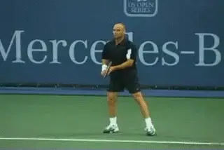
The 4 / 3 grip structure: a mild semi-western that allows players to step in and hit early.
If we look at his hand we can see that Andre's heel pad is on Bevel 3. That's actually the same as Sampras and Federer. His index knuckle is lower than either of those two players though. It's in the center of Bevel 4. That makes his grip a "4 / 3." In my opinion, it's the first grip structure we should consider truly "semi-western." This is because, unlike Pete or Roger, it's the first grip in which one of the two key check points has moved partially underneath the handle, as opposed to primarily behind. I call this "4 / 3 " grip a "mild semi western," since it's less extreme than most all of the other semi-western players, as we shall see.
When he was coming up, commentators remarked on Agassi's incredible topspin in comparison to other top players--for example, John McEnroe or Jimmy Connors. Not anymore. As our studies have shown (link) Agassi, like Sampras, averages around 1800rpm on his forehands. This is 30% less than a player like Andy Roddick, whose average is about 2700rpm. In the modern game, Agassi is considered one of the great "flat" ball strikers. Again, it's amazing to witness how much the game has changed, in this case over the course of the career of one great player like Andre.
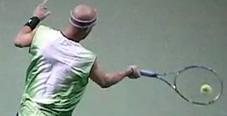
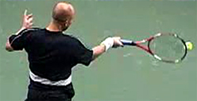
The 4 / 3style: The ability to hit early, hit flat, but also to rotate the hand and arm.
Agassi's grip is critical to his strategic style. The grip separates him technically from the other semi-western players in two ways.
[First a "4 / 3 " grip is ideally suited for making contact at the mid point between waist and shoulder level.] This happens to be the height of most balls in tennis when they cross the baseline.
[The second difference with this grip is that it is compatible with a neutral or square stance.]
As we saw in our stance article (link) on the stances, the players with more extreme grips have bigger shoulder or torso rotational patterns. This makes it awkward to step into the ball and hit on the rise, because the front foot actually blocks the body rotation. If Agassi's grip were any more extreme, he would not be able to play the way he plays.
Most semi-western players on the tour use the more extreme styles described below, but there are some other top players whose grips are similar or identical to Agassi's. Nickolas Kiefer is one example. Marat Safin is another. Like Agassi, Kiefer is a gifted player with the ability to take the ball early and make great shot making appear effortless. James Blake is one more. Technically the "4 / 3 " grip is associated with a relatively compact style. This means less torso rotation, but it can also mean less hand and arm rotation.
Players with this grip structure can hit through the ball with the racket more on edge. This goes with use of the neutral stance, and with taking more balls early. We see this with Agassi. But 4 / 3 players also possess the ability to rotate further with the torso and the hand and arm. For Agassi this is usually on high balls with an open stance. But other players like Blake and Kiefer have made this option more the norm. These are all important points in understanding the meaning of these grip structures for the average player.
Roger Federer and Your Game
In the second part of this article, we'll look at the other 3 more extreme variations, and talk more about which grips are best suited to what types of players, and especially at what levels. But if we look at the three more conservative grips presented here we can make several observations. At the pro level these grips are associated with an attacking style, either an all court game, or hitting the ball on the rise closer to the baseline.
Like Agassi, Blake plays around the baseline and takes the ball early.
Although the majority of players use the more extreme grips we will describe in the next article, it seems that many or most the players who are perceived as the most gifted athletes actually use the more conservative variations. This makes sense because the eastern or mild semi-western grips have lower contact points, and that in turn means hitting more balls on the rise. In the modern game with the velocity of the groundstrokes reaching 90mph with up to 3000 or even 4000rpm of heavy spin, there are very few players capable of this kind of early timing on a consistent basis. This is why you see so many more examples of the extreme grips at high levels.
The paradox is that the complete reverse applies when we consider most club, league and NTRP tournament play. The more conservative grips used by the most gifted players at the pro level are actually better suited for the vast majority of tennis players currently on the planet. In this respect super elite pro players actually have something in common with the average player.
How is this possible? Correct, it has to do with the contact height. Players like Roger Federer control the contact height by playing the ball before it rises out of their strike zone. This means a contact height around waist level, up to a few inches higher or lower. But this corresponds with the natural contact height of the ball for the vast majority of players at lower levels.
The reason we see the extreme grips in the pro game has less to do with any technical advantage than the need to play the ball so much higher. If you are a talented college player or an elite junior but play with a baseline style, then it may make sense to model your game on Lleyton Hewitt or even Rafael Nadal. If you just want to be club champion at the 4.0 level, then Roger Federer may be your man. Interesting isn't it? More on all this later in Part 2, after we take a detailed look at the extreme grips as well.

John Yandell is widely acknowledged as one of the leading videographers and students of the modern game of professional tennis. His high speed filming for Advanced Tennis and TPA have provided new visual resources that have changed the way the game is studied and understood by both players and coaches. He has done personal video analysis for hundreds of high level competitive players, including Justine Henin-Hardenne, Taylor Dent and John McEnroe, among others.
In addition to his role as Editor of TPA he is the author of the critically acclaimed book Visual Tennis. The John Yandell Tennis School is located in San Francisco, California.